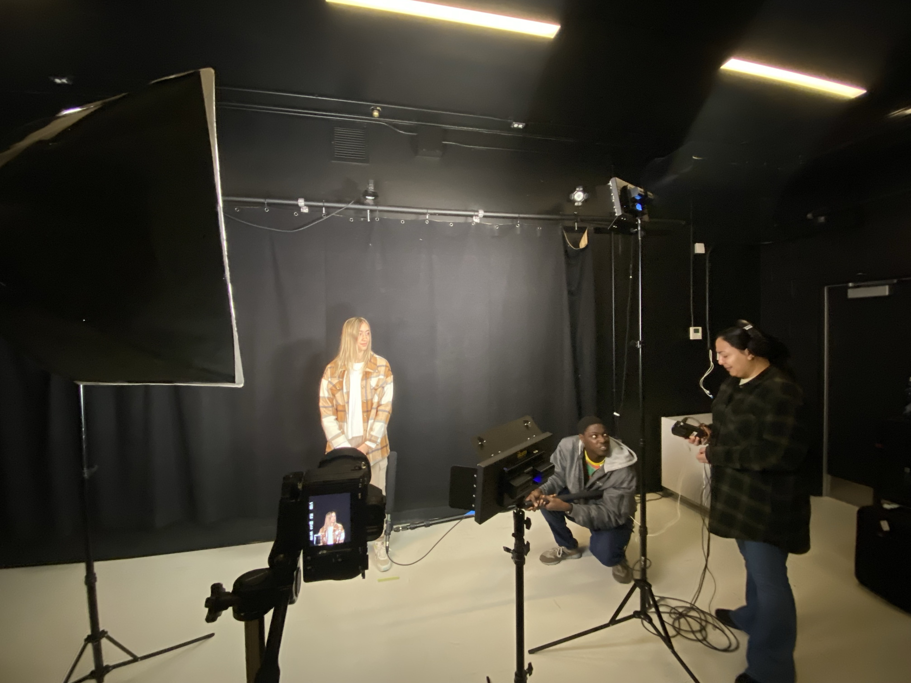
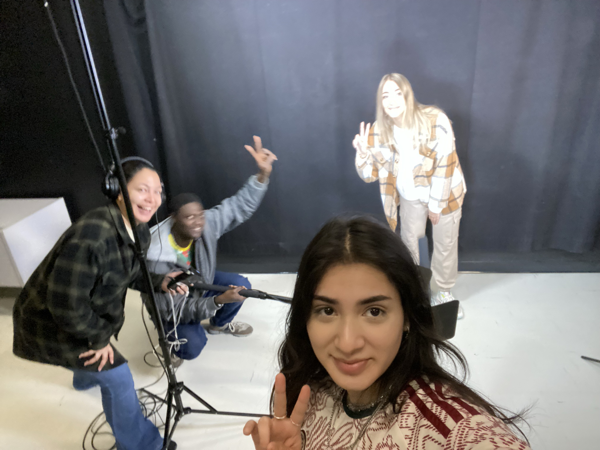
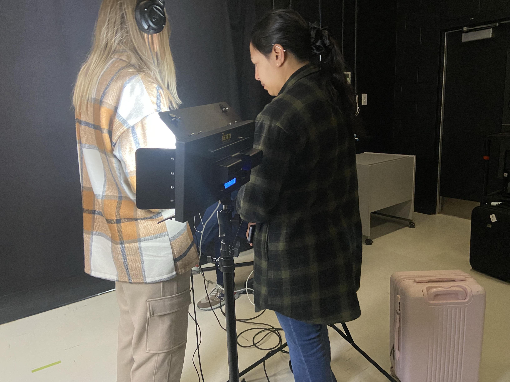
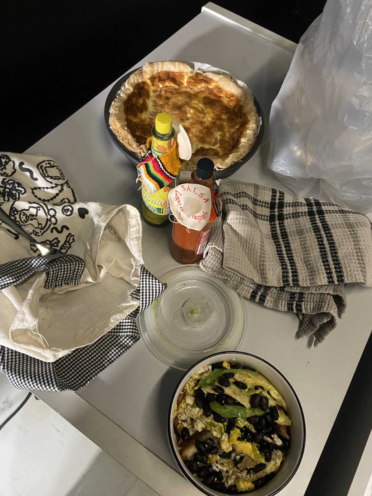
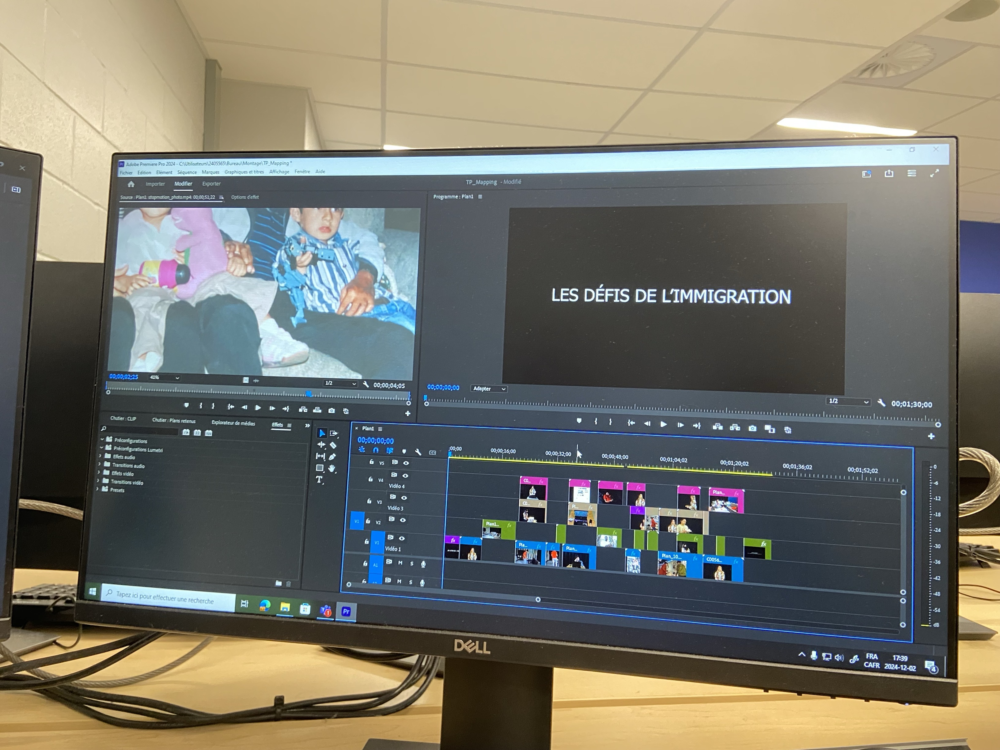
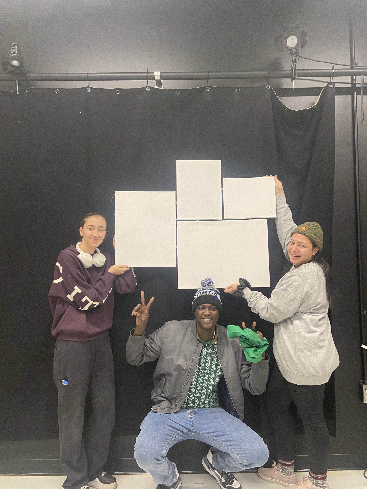

Les défis de l'immigration
Une expérience immersive qui explore les défis de l’immigration à travers un récit fictionnel et un mapping vidéo.
2025
role
Projet scolaire
Contexte
Ce projet a été réalisé dans le cadre de mon premier projet final en intégration multimédia.
Il
se divisait en deux parties : la création d’un court métrage narratif, suivie d’une
adaptation
en expérience immersive présentée lors d’un événement public.
Avec mon équipe, nous avons
choisi d’aborder le thème de l’immigration, avec l’envie de proposer une approche sensible
et
accessible. L’objectif n’était pas de créer quelque chose de complexe, mais plutôt de
transmettre une réalité humaine : permettre aux personnes immigrantes de s’identifier, et
aux
autres de mieux comprendre les défis liés à ce parcours.
À travers ce projet, nous
voulions
faire ressentir à la fois la difficulté de certaines situations, mais aussi l’espoir d’une
intégration possible.


Mon rôle
Sur ce projet, j’ai occupé un rôle polyvalent tout au long des différentes phases.
En
préproduction, j’ai participé à l’écriture du scénario et à la direction artistique en tant
que
scénariste et réalisatrice.
En production, j’ai contribué à plusieurs aspects du
tournage,
dans une dynamique collaborative où chacun expérimentait différents rôles.
En
postproduction,
j’ai pris en charge une grande partie du montage vidéo et audio, notamment sur Premiere Pro,
ainsi que la création d’un effet sonore binaural avec Adobe Audition et des ajustements
musicaux
sur FL Studio.
J’ai également accompagné mon équipe sur certains outils, notamment After
Effects et MadMapper, afin de faciliter l’avancement global du projet.








Logiciels utilisés
Mes apprentissages
Ce projet m’a permis de découvrir en profondeur le processus de création audiovisuelle, de
l’écriture
à la postproduction. J’ai particulièrement développé ma sensibilité au détail, notamment dans le
montage et le travail sonore, pour renforcer l’impact émotionnel.
Il m’a aussi appris
l’importance de la communication et de l’organisation en équipe, ainsi que ma capacité à
m’adapter
face aux imprévus.
Enfin, ce projet a confirmé mon intérêt pour une approche polyvalente du
multimédia, où la combinaison de plusieurs disciplines permet de créer des expériences plus
riches
et complètes.